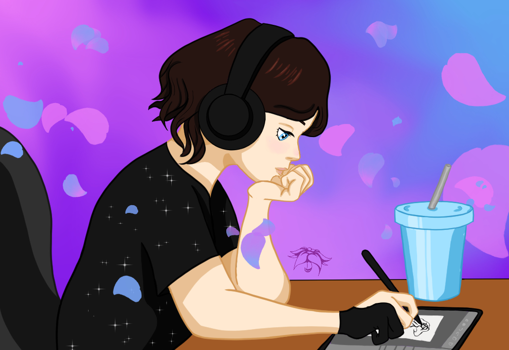

Welcome to my portfolio website
Get to know me and my skills
Karolina Morka
Officially: A graphic designer with a bachelor's degree, ready to start working.
Unofficially: A person who thinks in images and can't wait to show them to the world.
Get to know me and my skills
Officially: A graphic designer with a bachelor's degree, ready to start working.
Unofficially: A person who thinks in images and can't wait to show them to the world.


My name is Karolina Morka, and I’ve been drawing for as long as I can remember — first in notebooks, then on a tablet. I completed a bachelor’s degree in computer graphics, and I draw inspiration from everywhere — because why limit yourself to one style when the world is so diverse?
It all started with Disney classics like The Lion King and The Hunchback of Notre Dame, which showed me that animation can be deeply moving. As I got older and discovered the internet, I realized that incredible things aren’t created only by big studios, but also by individuals working at their own desks. Shows like The Owl House and Steven Universe proved that what really matters is creativity and passion, not budget. Today, Glitch Productions is doing exactly that — their The Amazing Digital Circus is reaching cinemas and showing that dreams can come true. It’s people and what they are capable of creating that inspire me the most.
I haven’t worked professionally in the field yet, but it’s only a matter of time. I treat every new project as an opportunity to learn and experiment, approaching my work with enthusiasm and an open mind.
And my biggest dream? To create an animation or a game that captivates millions. Not a small goal — but those are exactly the kinds of ambitions worth saying out loud.
Polish-Japanese Academy of Information Technology Koszykowa 86, 02-008 Warsaw,
Field of Study: Computer Graphics, Faculty of New Media Arts, Specialization: Animation
Upon completion of studies, I hold:
• Bachelor's degree in Computer Graphics
• Professional title: Computer Graphic Designer
Horticultural Technical Secondary School (Zespół Szkół nr 39 im. Edmunda Jankowskiego) - Bełska 1/3, 02-640 Warsaw,
Completed a four-year technical program Field of Study: Veterinary Technician
Earned:
• Vocational qualification certificate
• Diploma confirming professional qualifications
• Secondary school leaving certificate (Matura)
• Participation in a comprehensive training program in retail banking
• Learning banking systems and call center processes
• Telephone customer service in basic banking operations
• Development of communication skills and professional customer service
• Working in accordance with bank quality and security standards
• Welcoming and checking in guests
• Providing support and assistance to hotel guests
• Resolving guest issues
• Handling payments and issuing invoices
• Operating hotel systems (Hotres and Salto)
• Operating the fire protection system
• Treatment of injured and weakened animals
• Monitoring animal welfare
• Conducting veterinary preventive care
• Reviewing documents, assessing their completeness, and taking necessary steps to rectify any deficiencies
• Handling payments
• Preparing products according to company standards
• Operating kitchen stations (grill, sandwich preparation, frying)
• Maintaining cleanliness, hygiene, and food safety standards
• Teamwork in a dynamic and fast-paced environment
• Working under time pressure
.png)
.jpg)
.jpg)
.jpg)
.jpg)
.jpg)